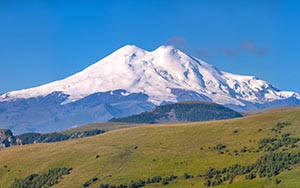

Эльбрус
 Cтратовулкан на Кавказе (5642 метра над уровнем моря) — самая высокая горная вершина России и Европы (при проведении границы Европы и Азии по Главному Кавказскому хребту или южнее), входящая в список высочайших вершин частей света «Семь вершин». Талая вода ледников, стекающая с его склонов, питает одни из наиболее крупных рек Северного Кавказа: Кубань, Малку и Баксан. За счёт хорошо развитой транспортной и сопутствующей инфраструктуры Эльбрус и прилегающие к нему районы очень популярны в рекреационном, спортивном, туристическом и альпинистском плане. На седловине Эльбруса (5416 м), разделяющей его Восточную (5621 м) и Западную (5642 м) вершины, расположен самый высокогорный приют Кавказа. Эльбрус находится в Боковом хребте Большого Кавказа в 10 км к северу от Главного Кавказского хребта на границе республик Кабардино-Балкария и Карачаево-Черкесия и представляет собой горный массив вулканического происхождения с диаметром основания 15 км и ярко выраженными Восточной (5621 м) и Западной вершинами (5642 м), разделённых протяжённой пологой седловиной (перевал Седловина Эльбруса, 5416 м). Расстояние между вершинами 1500 м. Абсолютные высоты цоколя 3200—3800 м[16]. Средняя крутизна склонов 35°. Впервые высота Эльбруса была определена в 1813 году академиком В. К. Вишневским и, по его оценке, составила 5421 м.